#environmental:muddy_pig_decorations
物品标签 · 179 个已收录成员
标签成员 (179)
 张开的眼眸花
张开的眼眸花minecraft:open_eyeblossom
 闭合的眼眸花
闭合的眼眸花minecraft:closed_eyeblossom
 暖和猴毛风车子
暖和猴毛风车子atmospheric:warm_monkey_brush
 炽热猴毛风车子
炽热猴毛风车子atmospheric:hot_monkey_brush
 滚烫猴毛风车子
滚烫猴毛风车子atmospheric:scalding_monkey_brush
 丝兰花
丝兰花atmospheric:yucca_flower
 吉莉草
吉莉草atmospheric:gilia
 凤眼莲
凤眼莲atmospheric:water_hyacinth
 火棘
火棘atmospheric:firethorn
 连翘
连翘atmospheric:forsythia
 秋番红花
秋番红花autumnity:autumn_crocus
 金银花
金银花bountifulfares:honeysuckle
 堇紫风铃花
堇紫风铃花bountifulfares:violet_bellflower
 杜鹃花
杜鹃花ecologics:azalea_flower
 车轮花
车轮花environmental:cartwheel
 蓝铃花
蓝铃花environmental:bluebell
 紫罗兰
紫罗兰environmental:violet
 石竹
石竹environmental:dianthus
 红色莲花
红色莲花environmental:red_lotus_flower
 白色莲花
白色莲花environmental:white_lotus_flower
 一点红
一点红environmental:tasselflower
 黄色木槿花
黄色木槿花environmental:yellow_hibiscus
 橙色木槿花
橙色木槿花environmental:orange_hibiscus
 红色木槿花
红色木槿花environmental:red_hibiscus
 粉红色木槿花
粉红色木槿花environmental:pink_hibiscus
 品红色木槿花
品红色木槿花environmental:magenta_hibiscus
 紫色木槿花
紫色木槿花environmental:purple_hibiscus
 星光花
星光花eternal_starlight:starlight_flower
 金灿花
金灿花eternal_starlight:aureate_flower
 松球花
松球花eternal_starlight:conebloom
 扇紫花
扇紫花eternal_starlight:nightfan
 粉玫瑰
粉玫瑰eternal_starlight:pink_rose
 星光火炬花
星光火炬花eternal_starlight:starlight_torchflower
 茜草花
茜草花eternal_starlight:whisperbloom
 沼泽玫瑰
沼泽玫瑰eternal_starlight:swamp_rose
 枯萎星光花
枯萎星光花eternal_starlight:withered_starlight_flower
 漠紫花
漠紫花eternal_starlight:desert_amethysia
 枯萎漠紫花
枯萎漠紫花eternal_starlight:withered_desert_amethysia
 红色晶寄花
红色晶寄花eternal_starlight:red_crystalfleur
 蓝色晶寄花
蓝色晶寄花eternal_starlight:blue_crystalfleur
 火兰
火兰eternal_starlight:fire_orchid
 苔生花
苔生花eternal_starlight:red_velvetumoss_flower
 玫瑰
玫瑰candlelight:rose
 野生车前草
野生车前草farm_and_charm:wild_ribwort
 野生荨麻
野生荨麻farm_and_charm:wild_nettle
 野生小麦
野生小麦farm_and_charm:wild_emmer
 野生玉米
野生玉米farm_and_charm:wild_corn
 野生大麦
野生大麦farm_and_charm:wild_barley
 野生燕麦
野生燕麦farm_and_charm:wild_oat
 野生胡萝卜
野生胡萝卜farm_and_charm:wild_carrots
 野生甜菜
野生甜菜farm_and_charm:wild_beetroots
 野生土豆
野生土豆farm_and_charm:wild_potatoes
 野生番茄
野生番茄farm_and_charm:wild_tomatoes
 野生生菜
野生生菜farm_and_charm:wild_lettuce
 野生洋葱
野生洋葱farm_and_charm:wild_onions
 野生草莓
野生草莓farm_and_charm:wild_strawberries
 黄色野花
黄色野花natures_spirit:yellow_wildflower
 紫色野花
紫色野花natures_spirit:purple_wildflower
 蓝铃花
蓝铃花natures_spirit:bluebell
 银莲花
银莲花natures_spirit:anemone
 蓝色鸢尾
蓝色鸢尾natures_spirit:blue_iris
 白花帚石楠
白花帚石楠natures_spirit:white_heather
 黑花鸢尾
黑花鸢尾natures_spirit:black_iris
 紫花帚石楠
紫花帚石楠natures_spirit:purple_heather
 矮花丛
矮花丛natures_spirit:dwarf_blossoms
 红宝石花
红宝石花natures_spirit:ruby_blossoms
 万寿菊
万寿菊natures_spirit:marigold
 朱槿
朱槿natures_spirit:hibiscus
 虎百合
虎百合natures_spirit:tiger_lily
 帝王花
帝王花natures_spirit:protea
 红花帚石楠
红花帚石楠natures_spirit:red_heather
 白色海香芥
白色海香芥upgrade_aquatic:white_searocket
 粉红色海香芥
粉红色海香芥upgrade_aquatic:pink_searocket
 蒲公英
蒲公英minecraft:dandelion
 虞美人
虞美人minecraft:poppy
 兰花
兰花minecraft:blue_orchid
 绒球葱
绒球葱minecraft:allium
 蓝花美耳草
蓝花美耳草minecraft:azure_bluet
 红色郁金香
红色郁金香minecraft:red_tulip
 橙色郁金香
橙色郁金香minecraft:orange_tulip
 白色郁金香
白色郁金香minecraft:white_tulip
 粉红色郁金香
粉红色郁金香minecraft:pink_tulip
 滨菊
滨菊minecraft:oxeye_daisy
 矢车菊
矢车菊minecraft:cornflower
 铃兰
铃兰minecraft:lily_of_the_valley
 凋灵玫瑰
凋灵玫瑰minecraft:wither_rose
 火把花
火把花minecraft:torchflower
 核桃树苗
核桃树苗caupona:walnut_sapling
 无花果树苗
无花果树苗caupona:fig_sapling
 枸杞树苗
枸杞树苗caupona:wolfberry_sapling
 苍白橡树树苗
苍白橡树树苗minecraft:pale_oak_sapling扭曲树苗
architects_palette:twisted_sapling花梨木树苗
atmospheric:rosewood_sapling酸枝树苗
atmospheric:morado_sapling丝兰树苗
atmospheric:yucca_sapling梾树树苗
atmospheric:kousa_sapling白杨树苗
atmospheric:aspen_sapling绿色白杨树苗
atmospheric:green_aspen_sapling
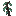
阴郁木树苗atmospheric:grimwood_sapling
 月桂树苗
月桂树苗atmospheric:laurel_sapling干燥月桂树苗
atmospheric:dry_laurel_sapling醋栗幼苗
atmospheric:currant_seedling枫树树苗
autumnity:maple_sapling黄枫树苗
autumnity:yellow_maple_sapling橙枫树苗
autumnity:orange_maple_sapling红枫树苗
autumnity:red_maple_sapling
 苹果树树苗
苹果树树苗bountifulfares:apple_sapling
 金苹果树树苗
金苹果树树苗bountifulfares:golden_apple_sapling
 橙子树树苗
橙子树树苗bountifulfares:orange_sapling
 柠檬树树苗
柠檬树树苗bountifulfares:lemon_sapling
 李子树树苗
李子树树苗bountifulfares:plum_sapling
 朽老苹果树树苗
朽老苹果树树苗bountifulfares:hoary_apple_sapling
 核桃树树苗
核桃树树苗bountifulfares:walnut_sapling
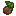
椰树幼苗ecologics:coconut_seedling核桃树苗
ecologics:walnut_sapling
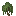
柳树树苗environmental:willow_sapling松树树苗
environmental:pine_sapling粉红色紫藤树苗
environmental:pink_wisteria_sapling蓝色紫藤树苗
environmental:blue_wisteria_sapling紫色紫藤树苗
environmental:purple_wisteria_sapling白色紫藤树苗
environmental:white_wisteria_sapling李树树苗
environmental:plum_sapling明朗李树树苗
environmental:cheerful_plum_sapling阴沉李树树苗
environmental:moody_plum_sapling月辉树苗
eternal_starlight:lunar_sapling北地树苗
eternal_starlight:northland_sapling
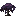
阴榕树苗eternal_starlight:banyin_sapling猩红树苗
eternal_starlight:scarlet_sapling榧树树苗
eternal_starlight:torreya_sapling
 海铃茎苗
海铃茎苗eternal_starlight:jinglestem_sapling
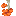
摇篮树苗eternal_starlight:cradlewood_saplingDark Cherry Sapling
vinery:dark_cherry_sapling苹果树苗
vinery:apple_tree_sapling
 梭梭树苗
梭梭树苗natures_spirit:saxaul_sapling
 冷杉树苗
冷杉树苗natures_spirit:fir_sapling
 雪松树苗
雪松树苗natures_spirit:cedar_sapling
 粉花紫藤树苗
粉花紫藤树苗natures_spirit:pink_wisteria_sapling
 蓝花紫藤树苗
蓝花紫藤树苗natures_spirit:blue_wisteria_sapling
 橄榄树苗
橄榄树苗natures_spirit:olive_sapling
 短叶丝兰树苗
短叶丝兰树苗natures_spirit:joshua_sapling
 橙叶枫树树苗
橙叶枫树树苗natures_spirit:orange_maple_sapling
 白花紫藤树苗
白花紫藤树苗natures_spirit:white_wisteria_sapling
 落叶松树苗
落叶松树苗natures_spirit:larch_sapling
 桃花心树苗
桃花心树苗natures_spirit:mahogany_sapling
 红杉树苗
红杉树苗natures_spirit:redwood_sapling
 紫藤树苗
紫藤树苗natures_spirit:purple_wisteria_sapling
 白杨树苗
白杨树苗natures_spirit:aspen_sapling
 红叶枫树树苗
红叶枫树树苗natures_spirit:red_maple_sapling
 柏树树苗
柏树树苗natures_spirit:cypress_sapling
 柳树树苗
柳树树苗natures_spirit:willow_sapling
 柳杉树苗
柳杉树苗natures_spirit:sugi_sapling
 黄叶枫树树苗
黄叶枫树树苗natures_spirit:yellow_maple_sapling
 假紫荆树苗
假紫荆树苗natures_spirit:palo_verde_sapling
 牧豆树苗
牧豆树苗natures_spirit:ghaf_sapling桑树树苗
upgrade_aquatic:river_sapling
 橡树树苗
橡树树苗minecraft:oak_sapling
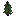
云杉树苗minecraft:spruce_sapling白桦树苗
minecraft:birch_sapling
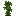
丛林树苗minecraft:jungle_sapling
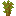
金合欢树苗minecraft:acacia_sapling深色橡树树苗
minecraft:dark_oak_sapling
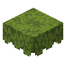
杜鹃花丛minecraft:azalea
 盛开的杜鹃花丛
盛开的杜鹃花丛minecraft:flowering_azalea
 红树胎生苗
红树胎生苗minecraft:mangrove_propagule樱花树苗
minecraft:cherry_sapling
 荧光蘑菇
荧光蘑菇eternal_starlight:glowing_mushroom
 闪光蘑菇
闪光蘑菇eternal_starlight:shining_mushroom
 攀岩菇
攀岩菇eternal_starlight:bouldershroom
 海黏菇
海黏菇eternal_starlight:marimold
 红色蘑菇
红色蘑菇minecraft:red_mushroom
 棕色蘑菇
棕色蘑菇minecraft:brown_mushroom
 香菇
香菇natures_spirit:shiitake_mushroom
 荧光菇
荧光菇darkerdepths:glowshroom
 松露
松露environmental:truffle
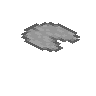
睡莲minecraft:lily_pad枯萎的灌木
minecraft:dead_bush
 蕨
蕨minecraft:fern
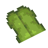
大型垂滴叶minecraft:big_dripleaf
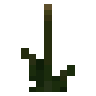
香蒲environmental:cattail
使用该标签的配方
无